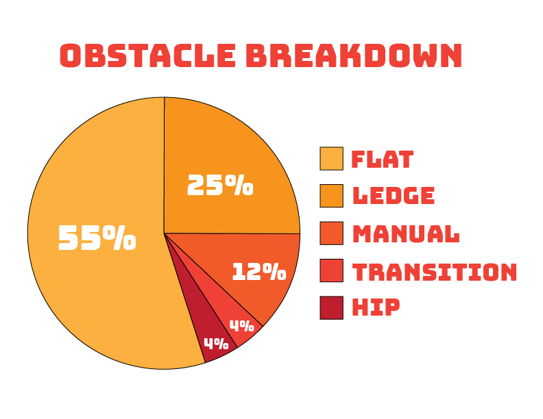
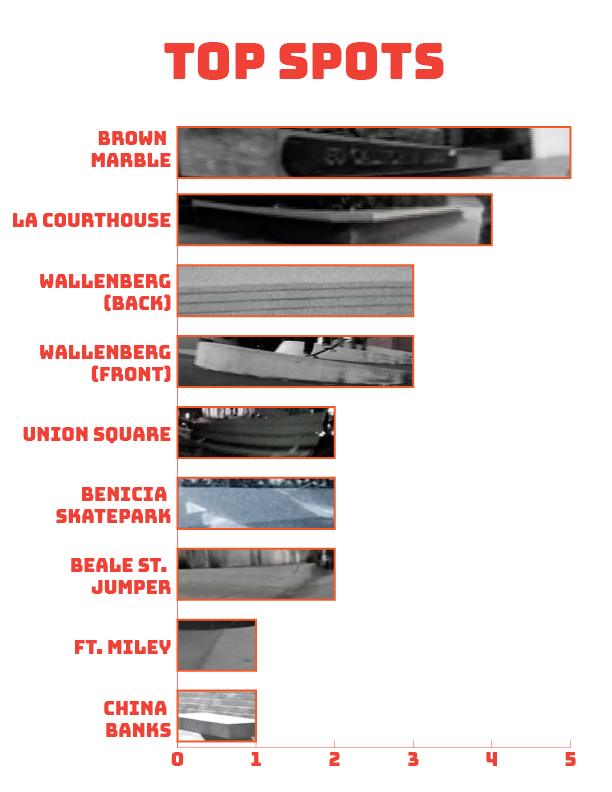

Back in 1994, Stereo Skateboards bucked trends and released a skate video built around smooth jazz, shaky home-movie film footage, reasonably fitted pants, and simple tricks done with pop and style. Mike Daher set the tone with the opening segment that, despite being about as far from the ‘skate and destroy’ ethos as possible, garnered a T-Eddy award for “Best Video Part” from Thrasher magazine. Mike would subsequently quit the team and, other than a popping up for a trick here or there over the next 15 years, disappear from documented skateboarding for the more lucrative world of medical marijuana cultivation. Let’s take a look at the numbers that comprise Mike Daher’s skateboarding in Stereo’s A Visual Sound video:
Total Running Time: 4 Minutes
Total Number of Tricks: 56
Total Number of Lines: 15
Number of Tricks featured in Lines: 38
Percentage of Tricks in Lines: 68%
The overall impression from this part is of someone cruising the streets of San Francisco, perhaps on the way to get a cup of coffee and some more cigarettes. This is conveyed by the fact that over 2/3rd of the tricks are done in lines. Technical trick contrivance is forsaken for consistency and pop. Simplicity was the innovation. This is the video where how you pushed and how you looked on your switch 180s started to matter.
Speaking of switch 180s, there were a lot of them:
This Top Tricks chart contains all tricks done more than once in the part. It demonstrates that the tricks are decidedly rudimentary.
16% of all tricks in the video are simply ollies over things.
25% of all tricks are just 180 variations.
The most complicated trick is a nollie fs 180 to switch manual to switch bs 180, which is pretty much just spinning into and out of a wheelie.
The board only flips 9 times, and with the exception of a single flatground 360flip, they are all basically kickflips.
The percentage of tricks that are switch or nollie totals 34%, split right down the middle. Having a video part with a third of all tricks being switch or nollie is pretty against the grain for skateboarding in 1994.

This pie chart, which shows us the breakdown of all the obstacles Mike skates, further enforces the uncomplicated nature of the endeavor. There is nary a rail, stair set, or gap in sight. The most complex series of obstacles is the misshapen ‘transition’ lumps of the old Benicia skatepark. The gnarliest spot is probably the ledges atop the China Banks. Even the line in the front side of Wallenberg school, famous for its gaps, consists of two obstacle-free flatground 180s and a manual trick.
The most telling portion of this Obstacles chart is the giant Flat segment, which encompasses over half the tricks. This includes flatground tricks in lines and several tricks off curb cuts and bumps. Sometimes Daher airs a kickflip, one time he street grabs, but mostly these are simple tricks done with power and style over obstacles. In fact, 61% of the tricks on Flat are over obstacles. Let’s take a closer look.
Mike Daher doesn’t do tricks down things, he does them over things. As we can see from the chart above, pop is demonstrated through launchings over obstacles 19 different times. That makes 34% of his tricks in A Visual Sound over something. Usually a bench of some sort, but also trash cans (both on their sides and upright), as well as various barriers. He also kickflips the big planter at Brown Marble. And while we’re talking about Brown Marble…

Daher’s Stereo part is a time machine tour of pre-Pier 7 / post-EMB San Francisco spots. While not every spot is represented (with Hubba Hideout and Black Rock noticeably absent), nearly all the classics get at least one clip: China Banks, Ft. Miley, the Beale St. Jumper, Union Square, and both sides of Wallenberg. But taking the top spot for the Top Spots chart is Brown Marble (located at 52 California St.) with five tricks. Of note, while Brown Marble is very much a ledge spot, only one trick is a ledge trick.
For our final number to crush lets us track that artsy Stereo aesthetic. While it might seem like most of the footage is filmed in shaky super8 film, this isn’t at all the case. While nearly all the clips are highly desaturated and without much color, only 9 tricks are actually shot in film. And while A Visual Sound certainly went heavy with still photo fills and such, only about 21% of the 4 minute running time is non-skate footage, and most of that is in the lengthy filmed intro and outro.
So, there you have it. A game changing skate part known for its aesthetic sensibility and emphasis on style… reduced to a couple of graphs and a pile of numbers. If you want to dig even deeper into this part, check out the companion post over on the Warm Up Zone
Hit us up through email or on Instagram @4plymag and let us know what other parts upon which you would like us to crush numbers.